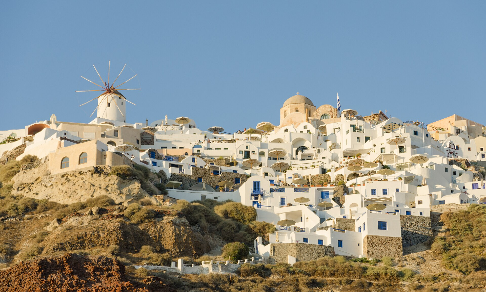

1
Match the season first
Weather decides most trips. A place in its good season beats a more famous place in its bad one, so pick a page before you pick a city.
Two seasons · twelve places
Two Seasons cuts a world-sized shortlist down to six summer places and six winter places. Each one is labelled with what it is actually famous for — poetry, history, nature — and each one carries its real seasonal weather, so you can match a place to the trip you are in the mood for instead of scrolling travel guides until the mood is gone.
Choose a season
Summer pages lean on sun, sea and long daylight. Winter pages lean on snow, low light and warm culture. Both use the same layout, so you can compare places one to one.

Six places that are at their best between June and August: caldera villages, Alpine lakes, a festival city that never gets too hot, and rice terraces in their dry season.
Open the summer shortlist →
Six places worth the cold: a snow-capped golden pavilion, aurora skies, car-free Matterhorn villages, and a medina that stays mild all January.
Open the winter shortlist →
1
Weather decides most trips. A place in its good season beats a more famous place in its bad one, so pick a page before you pick a city.
2
Every destination carries tags — poetry, history, nature, snow, sun. If you travel for verse and old streets, read the tagged ones first and ignore the rest.
3
Under each photo, the bracketed line gives the plain reasons to choose that place this season. That is the whole argument in two seconds.
Temperatures and daylight are long-run seasonal averages for the destination, not forecasts. They are there to tell you what to pack and whether the season is kind — check a forecast closer to your dates.
Travellers with a full year of options and no way to narrow them, or anyone who knows exactly what they want — quiet temples, storm-lit coasts, cities with a literary past — but not where to find it.